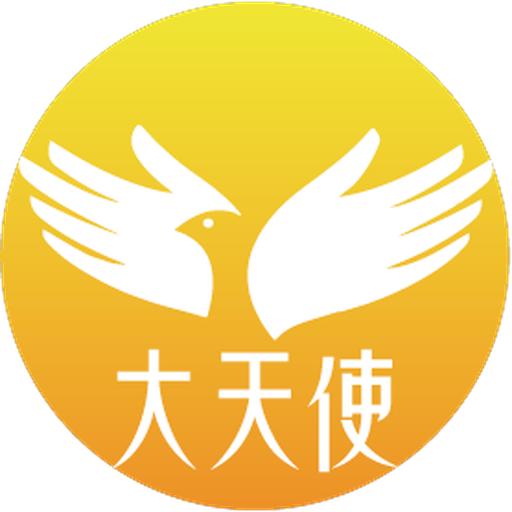
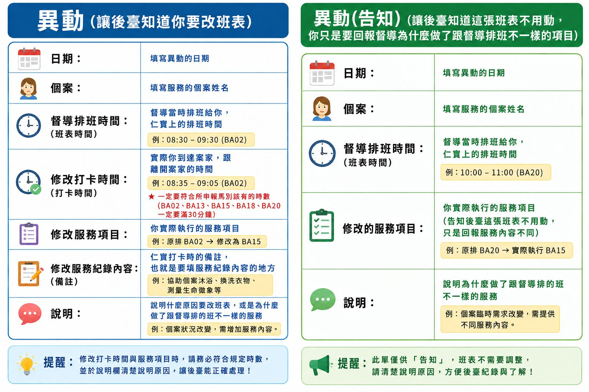
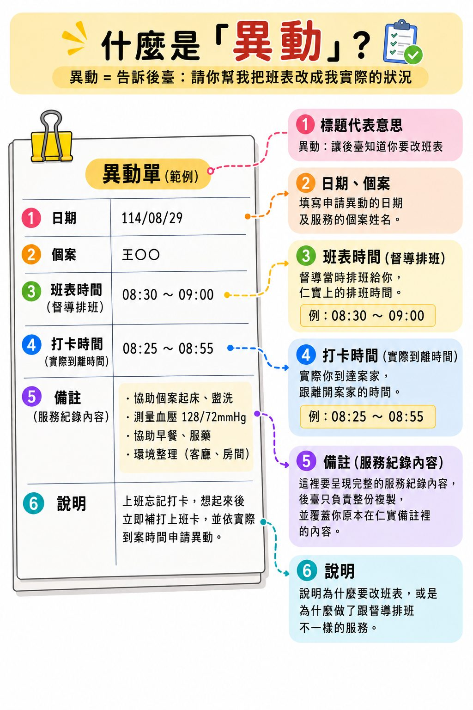

FOR OUR CAREGIVERS
服務前、服務中，一定要知道的事
這一頁整理了大天使居服員每天都用得到的規矩和小撇步。第一次讀請從頭看到尾，之後遇到狀況再回來查。
先看清楚個案的狀況和病史，例如是中風、小兒麻痺還是意外受傷造成行動不便。CMS 上都有寫，不要到現場才問：
✕ 不要問「您是車禍還是生病才這樣？」
這種問題會讓個案和家屬很尷尬。
可以的話，帶一雙自己的室內拖鞋，再多準備一套乾淨的換洗衣物。
我們在別人家裡工作，乾淨清爽是基本禮貌，也是讓案家放心的第一步。
進門先打招呼、自我介紹，接著拿出隨身酒精，跟案家說一聲「我先消毒一下」再開始服務。案家看得到你在做防護，會比較安心。
說話用平常的語氣就好，不用喊「報告」，我們不是在當兵，自然有禮貌就對了。
先問個案或家屬希望怎麼服務、有什麼習慣，了解之後再開始做。每一家的做法都不一樣，照對方的習慣來，服務才會順。
備餐一定要先跟案家確認做法。如果遇到不合理的要求，例如步驟太繁複、服務時間內做不完，當下或事後都要回報督導，並且留下文字紀錄。
我們在個案身上做的每一個動作，都要輕柔、仔細，不可以草率隨便。
遇到狀況先自己想辦法，這是金牌居服員的基本功。
個案要海鮮粥，就買海鮮粥，不能用魚片粥代替。案家問起時，也不要回答：
✕ 不要說「海鮮粥裡面也有魚片」
海鮮粥和魚片粥是不一樣的東西。長輩大多牙口不好，海鮮裡除了魚片，很多東西根本咬不動、吞不下，家屬點餐時早就想過了。
萬一真的買錯，直接跟案家說抱歉，不要解釋、不要爭辯，才不會變成客訴。
我們多一分用心，個案就多得到一分關心。
一次要送不只一家時：
路線事先排好，才不會讓長輩餓著等、餐點放涼。
只要有生命危險，不管是個案還是你自己，都不用管是不是上班時間，直接打。例如：
排班調整、和個案之間的小摩擦、服務上的不順或不滿，這些不影響生命、也不急，請留文字訊息把事情說清楚，督導上班時間會協助處理。
你是專業的照顧者，不是等人照顧的人。小事先試著自己處理，真的需要幫忙時，把話說清楚，督導才幫得上。
| 請假天數 | 最晚什麼時候說 |
|---|---|
| 1 天 | 盡量提前 |
| 超過 1 天 | 2 週前 |
| 超過 3 天 | 1 個月前 |
一定要傳文字訊息請假，不可以只用講的，避免日期、時間記錯。
越早說越好。最怕的是個案連續好幾天都沒人去，案家會抗議，個管員也會關切。
督導收到請假訊息後，會公布在大群組裡。後面想請假的人，請先看一下大群，盡量避開已經有人請假的時段。
同一段時間太多人請假，個案就沒人可以去服務，大家互相體諒，排班才排得過來。
感冒或身體不舒服想請假，請告訴督導：
這樣督導才能馬上安排代班，不會影響到長輩。
一次說完三件事：
範例訊息
督導好，王奶奶家我 9:00 到了，按門鈴和打家屬電話都沒人接，群組也 @ 了，已等 5 分鐘，請督導協助聯絡家屬。
照格式寫，該給的資訊就不會漏，後臺一看就懂，不用再回頭問你。

讓後臺知道你要改班表。仁寶上的班表要改成你實際的狀況，就用這張。
讓後臺知道這張班表不用動。你只是要回報督導，為什麼做了跟督導排班不一樣的項目。
班表不用動，通常是因為你自己已經在仁寶上改好了，後臺不用再幫你改，只需要知道原因。
日期、個案、督導排班時間、說明每次都要寫。其他「修改」開頭的欄位，有改才寫，沒改的那一行可以不寫。
按「複製」後，到 LINE 貼上再填就好。
異動 日期： 個案： 督導排班時間： 修改打卡時間： 修改服務項目： 修改服務紀錄內容： 說明：
異動（告知） 日期： 個案： 督導排班時間： 自己修改的服務項目： 說明：

範例一：異動（忘記打卡，要改打卡時間）
異動 日期：114/08/29 個案：王○○ 督導排班時間：08:30～09:00 BA02 修改打卡時間：08:25～08:55 BA02 修改服務紀錄內容：協助個案起床、盥洗；測量血壓 128/72mmHg；協助早餐、服藥；環境整理（客廳、房間） 說明：上班忘記打卡，想起來後立即補打上班卡，並依實際到案時間申請異動。
範例二：異動（告知）（班表不動，回報做了不同服務）
異動（告知） 日期：114/08/29 個案：王○○ 督導排班時間：10:00～11:00 BA20 自己修改的服務項目：原排 BA20 → 實際執行 BA15 說明：個案臨時需求改變，需提供不同服務內容。